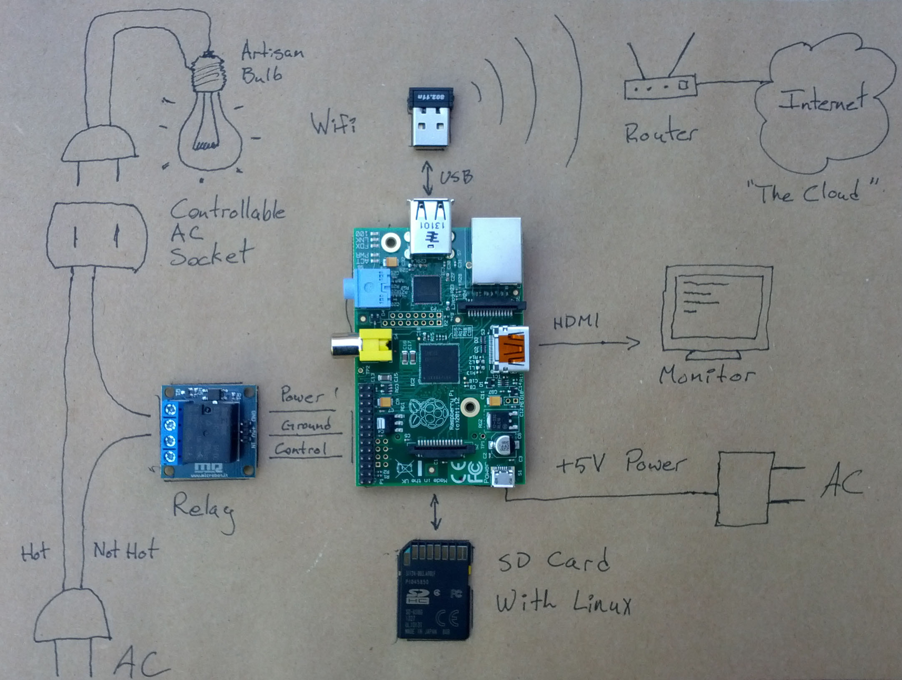
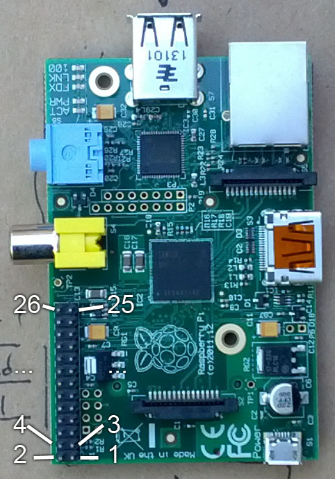

Set up a Raspberry Pi so that it turns an incandescent lamp on and off in response to these web requests:
http://address-of-rpi/on turns the light on.http://address-of-rpi/off turns the light off.You'll have all the equipment you need as well as someone on call to answer questions.
Here's an example of a working setup. The specific URLs in this case were http://192.168.2.14/on and http://192.168.2.14/off.
And a general overview sketch of the system. Note: the relay wiring is not exactly as shown.
You'll have these items available to you. Note you can use your own laptop if you wish, but there is also one available.
Your SD card will come with a fresh install of Raspbian. If you have to do this yourself, check the Raspberry Pi website downloads section for files and instructions.
The username is pi and the password is raspberry
The keyboard defaults to a UK layout. To change it edit the file /etc/default/keyboard and change the line XKBLAYOUT="gb" to XKBLAYOUT="us"
Linux needs to know how to access the lab Wifi. Edit the file /etc/wpa_supplicant/wpa_supplicant.conf and add this information, replacing SSID and PASSWORD with the Wifi network name and password:
network={
ssid="SSID"
psk="PASSWORD"
}
You can either reboot the pi after saving this, or run ifup wlan0
To find out your IP address, run ifconfig and look at the wlan0 section.
Risk of electric shock. Disconnect the circuit from power during work.
The Raspberry Pi can be damaged easily by incorrect wiring. Check your work before applying power.
Here is the datasheet for the relay module.
Here is the schematic diagram of the Raspberry Pi. The connector you want is named P1, shown on Sheet 2, E6.
The matching between the schematic and the actual board can be unclear. Here is the P1 pin numbering for clarification:
This code is written in Python. Here is the python documentation.
You must run Python as root (e.g. sudo python) to access GPIO.
This code is written in Python. Here is the python documentation.
This code uses the SimpleHTTPServer module included in the standard Python library.
{% highlight python %} import SocketServer import SimpleHTTPServer PORT = 8080 class CustomHandler(SimpleHTTPServer.SimpleHTTPRequestHandler): def do_GET(self): self.send_response(200) self.send_header('Content-type','text/html') self.end_headers() if self.path=='/hello': self.wfile.write("Hello, world!") elif self.path=='/goodbye': self.wfile.write("Goodbye, world!") else: self.wfile.write("I don't know that URL.") httpd = SocketServer.ThreadingTCPServer(("", PORT),CustomHandler) print "serving at port", PORT httpd.serve_forever() {% endhighlight %}This was fixed by rebooting the RPi.
See "Keyboard Setup" above.
{kind=link}
{kind=link}